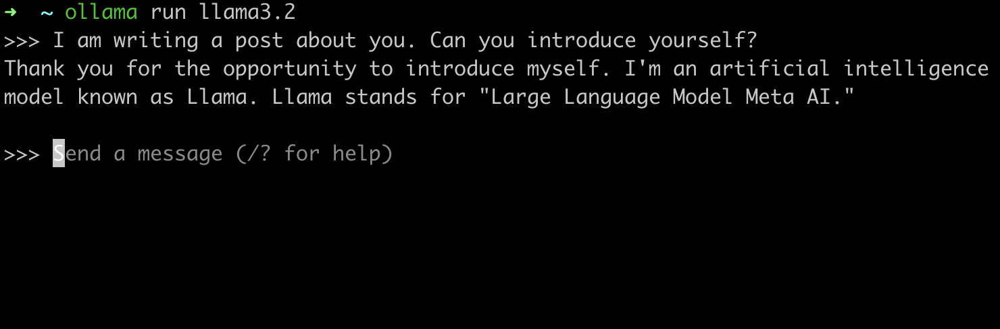

In the generative AI era and with large language models, they say the only limitation is your imagination. So, as maybe you, I had some ideas to implement with LLMs, but I didn’t want to spend a lot on testing and validating my prototypes. So, I decided to run , the Meta open-source LLM, on my machine or a VM to implement my prototypes with a free and self-hosted LLM.
This post is a guide on how to run Llama locally, step by step.
What You Need to Get Started
At first, you need some computational power, which I assume you already have. You could use your MacBook or any other laptop or PC. Or you could host it somewhere else with more computational power. GPUs are more suitable for running these tasks, so if you need to get results faster, hosting it on a machine with a GPU would be better.
Then, all you need is a tool called Ollama. Ollama is a tool to set up, download, and run large language models more easily than before. I tested it, and it was super easy to use and convenient, so I decided to introduce it here.
Setting Up and Running Ollama
Now, we want to run Ollama on our machine. The whole process is straightforward.
Step 1: Download and Install Ollama
First, you need to download Ollama. You can download it through .
You can choose the version that is most convenient for you. As a general rule, the more parameters, the bigger the download and the more time and resources it will take to provide the result.
Once it is installed, you can run the serve command to ensure that it works and is ready to be served:
ollama serve
Step 2: Pull the Llama3 Model
Now, you must select a model and download it to your local. You can check models . For example, we want to download the llama3.2. You can download it with the ollama pull command:
ollama pull llama3.2
It will take a while based on the model size.
Step 3: Generate Your First Self-Hosted LLM Result
Now everything is ready! you can use ollama command line tool by this command:
ollama run llama3.2

You either can send requests to the locolhost with your desired tool! like curl, postman, or within a python script or any other tools.
Note: for writing the post, I am using the latest version of ollama as of now which is . Maybe contributors change some of those commands or even workflows. In this case, check their documentations for latest changes and please let me know in the comments to make this post up to dated.
If you want to collaborate, get mentorship, or just chat, check out this page .